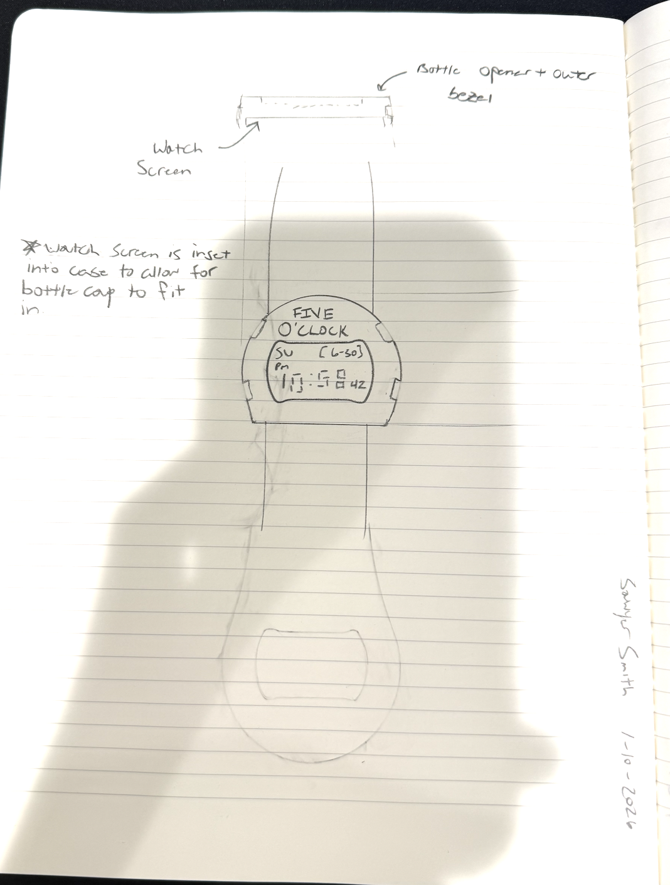

Design Concept: FIVE O'CLOCK
The FIVE O'CLOCK is a G-Shock style LCD watch that integrates a bottle opener directly into its design. The outer bezel of the watch functions as a fully functional bottle opener, while the watch face sits inset below. This design combines everyday functionality with wearable convenience—perfect for outdoor activities, social gatherings, or any situation where you might need quick access to a bottle opener without carrying extra tools.
Sketch

How It Works
The watch's outer bezel is machined or molded with the characteristic teeth and leverage point of a traditional bottle opener. When you need to open a bottle, you simply position the watch bezel under the bottle cap and use the watch as you would any other bottle opener. The LCD display remains protected beneath the opener mechanism, and the watch continues to function normally as a timepiece. The design maintains the rugged aesthetic of a G-Shock while adding practical utility that's always within reach.
This is a private blog for course notes and reflections. Content is not indexed or publicly listed.